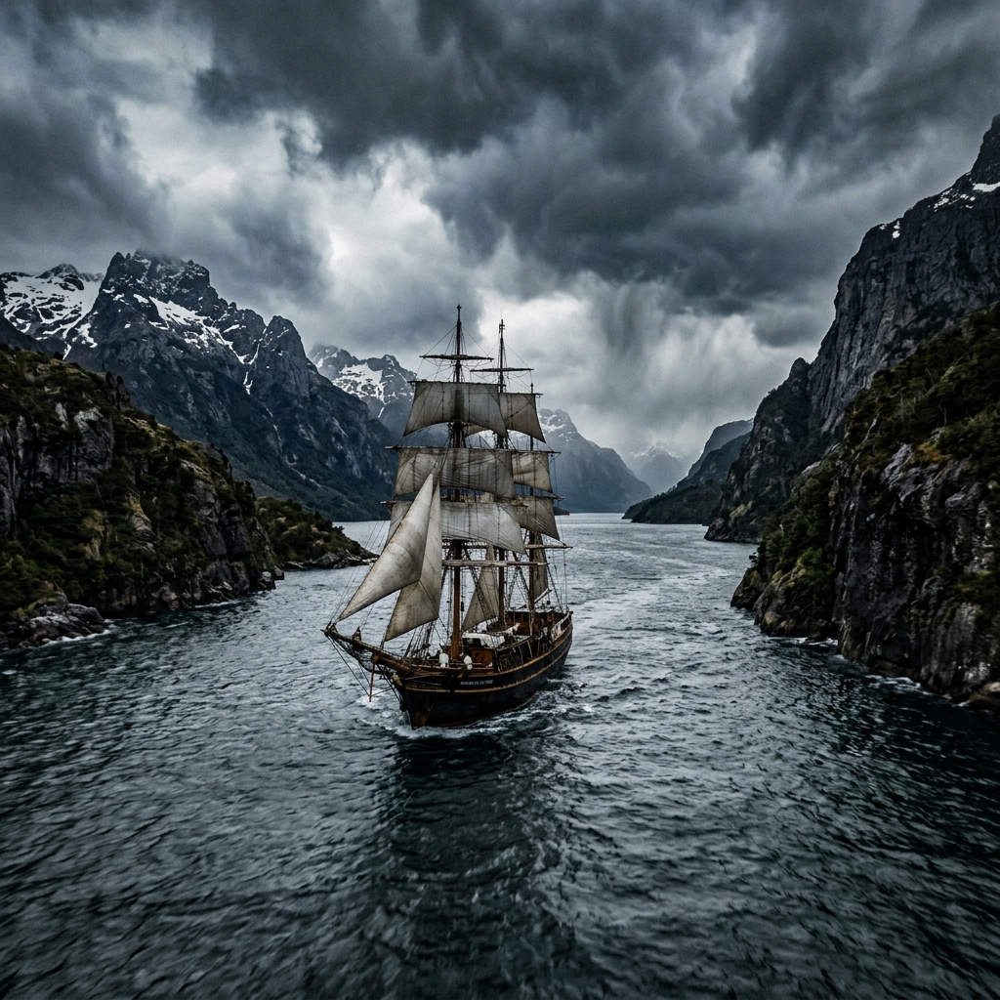
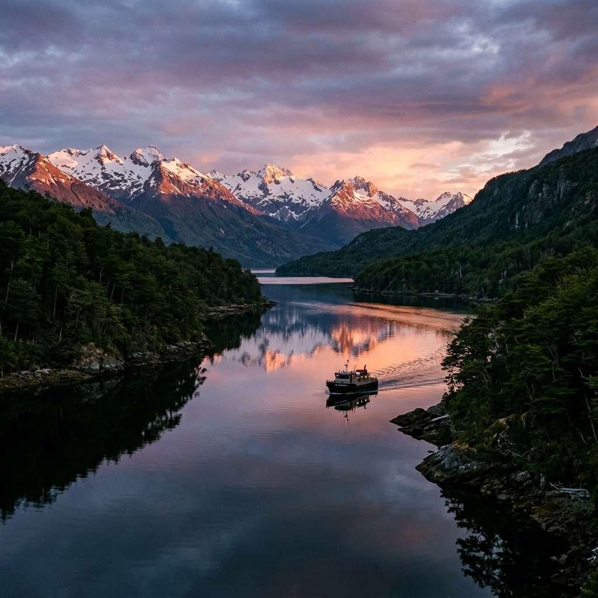
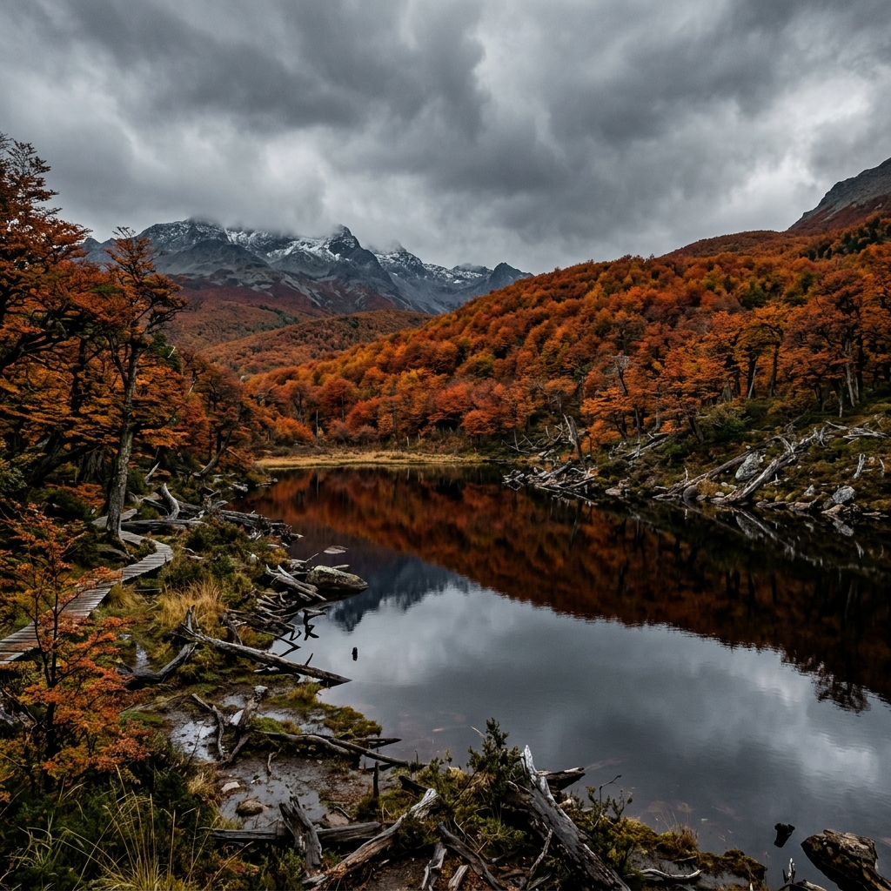
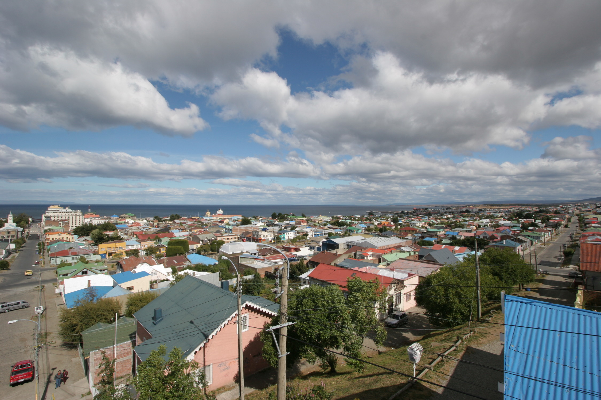
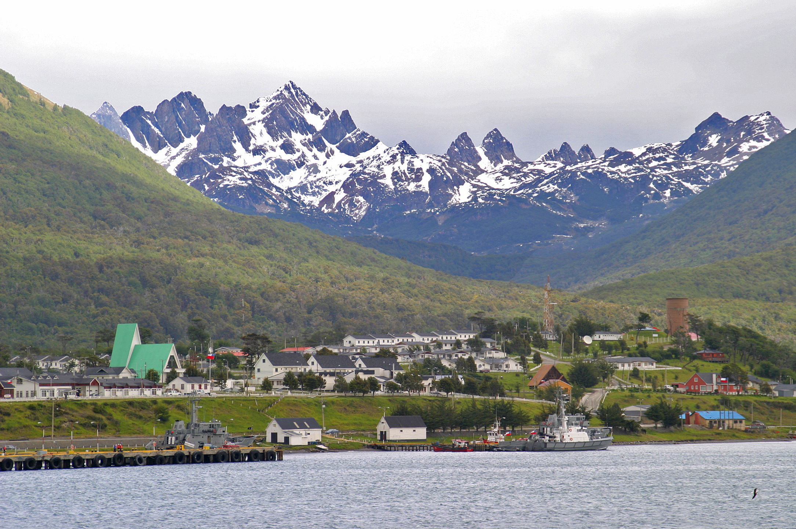
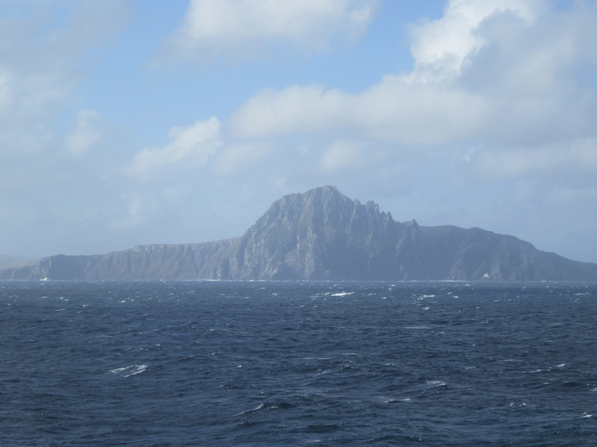

Culture &
Heritage
Understanding Southern Chile requires more than geographic orientation. This section documents the cultural, historical, and environmental context of the Magallanes Region — from the heritage of indigenous peoples and maritime exploration to contemporary conservation efforts and regional gastronomy.

Indigenous Heritage
The extreme south of Chile has been inhabited for thousands of years by indigenous peoples, most notably the Yaghan (Yámana), Kawésqar, and Selk'nam. These communities developed extraordinary physical and cultural adaptations to survive in sub-Antarctic marine and terrestrial environments.
Their histories, languages, and enduring cultural legacies are preserved and documented by Chilean institutions such as the Museo Antropológico Martín Gusinde in Puerto Williams and the Museo Regional Salesiano Maggiorino Borgatello in Punta Arenas.
Maritime Heritage
The geography of Southern Chile is defined by its waterways. The Strait of Magellan, the Beagle Channel, and the Drake Passage have played central roles in global maritime history, from the Magellan-Elcano expedition of 1520 to the surveys of HMS Beagle in the 1830s.
Today, this heritage is maintained by the Armada de Chile through an extensive network of lighthouses and coastal stations, and is documented in Punta Arenas at the Nao Victoria Museum, which houses full-scale replicas of historic vessels.

Protected Areas
The Magallanes Region contains some of Chile's most significant protected ecosystems. These include the UNESCO Cape Horn Biosphere Reserve, Yendegaia National Park on Tierra del Fuego, and the Omora Ethnobotanical Park on Navarino Island.
Managed by the National Forestry Corporation (CONAF) and other conservation bodies, these areas protect sub-Antarctic forests, peat bogs, and critical marine habitats from unauthorized development and industrial exploitation.

Regional Gastronomy
The cuisine of the far south is closely tied to its geography and history. The artisanal fishing communities of the region harvest king crab (centolla) from the cold channels, while the vast estancias of Tierra del Fuego and the mainland maintain a historic tradition of sheep farming, producing the renowned Magallanes lamb.
Regional flora, such as the calafate berry, has been utilized by indigenous peoples for millennia and remains a staple of local cultural identity.

Culture
The cultural identity of Southern Chile is shaped by isolation, extreme weather, and a mix of indigenous heritage and varied migratory waves. Punta Arenas reflects a strong European immigrant influence, particularly Croatian and British, tied to the 19th-century wool boom.
In contrast, smaller communities like Puerto Williams and Puerto Toro maintain a frontier culture focused on maritime logistics, artisanal fishing, and naval service.

Responsible Travel
Visitation to the Magallanes Region requires strict adherence to environmental and cultural guidelines. The fragility of sub-Antarctic ecosystems means that trace-free travel is a mandate, not an option.
Travelers are required to respect CONAF regulations in national parks, maintain legally mandated distances from marine wildlife, and prioritize certified local operators who contribute to the preservation of the region's heritage.